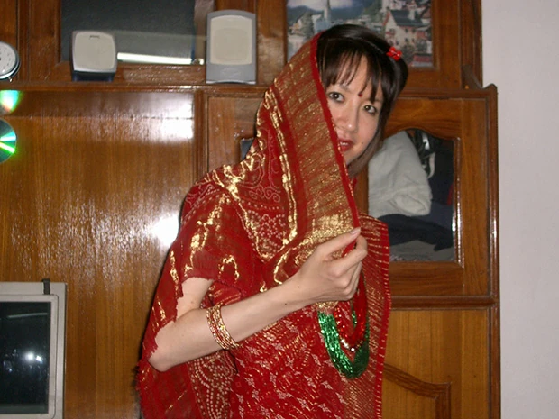
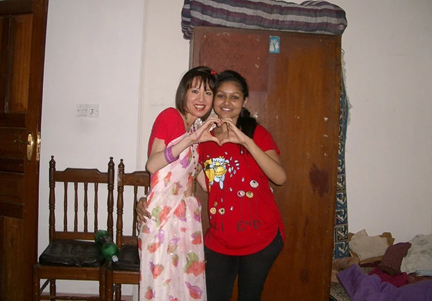

ホストファミリーがサリーの着付けと、ネパール人風（？）にメイクまでしてくれ、 ポーズもいろいろリクエストされてすごく盛り上がりました！
「以前より、ネパールに行ってみたかったことと、同時に英語を学べるプログラムが他にないものだったため、参加を決めました。
また、問い合わせをした時、すぐに丁寧なお返事をいただけたので、安心感を持ちました。
不安な点は事前に確認できたので、特にありませんでした。
英語レッスンでは、自分の一番弱い発音、スピーキングについて教えていただきました。
恐らく交通事情によるせいだと思いますが、毎日レッスンの時間がまちまちで、質問がなければ早く終わってしまいました。
楽しかったですが、自分で教材を用意していくべきだったのかもしれません。
ネパールでのホームステイは、1日中地元の方と過ごせてとても貴重な体験でした。
日本と異なる風習も興味深く、ネパールでの暮らしについていろいろ教えていただきました。
食事方法やトイレ等、現地の方法に従いましたが、特に不便は感じませんでした。
手で食べた方がおいしいのですが、慣れないせいかあまりにも時間がかかるので途中からスプーンで食べるようにしました。
ステイ先に到着したたときに、ホストファミリーから「家族のように思って」と言われ、本当に家族のように接してくれました。
親族の方もたくさんいましたが、分け隔てなく、自分もネパール人になったかのようでした。
日本の感覚でいると戸惑うくらいフレンドリーで親切でした。
別れがつらくて、今思い出しても泣けます。
（ご病気のおばあさんがいたので、自分が負担になったのでは・・と心配しています。）
ネパールに行く前に、ネパール人は穏やかで優しいと聞いていました。
実際もそうでしたが、もっと活気があって話好きな印象でした。
人々のつながりが強くて、些細なことでも一緒に楽しんでいました。
また、思っていたより交通量が多く、車と人が通りに入り乱れていたのが衝撃でした。
多様な寺院も印象的でした。

これまでの旅行は観光がメインで、移動も電車だったりツアーバスだったの為、地元の人と話す機会も少なかったので、今回はホームステイが出来て本当に良かったです。
地元の移動手段を使ったこともとてもおもしろかったです。
一人で行ったこともあり、一つ一つの体験が強烈に印象に残りました。
次回は、観光で都市部以外も訪れてみたいです。
ホストファミリーにまた会いたいので、もしホームステイをするときは、またこのプログラムのお世話になりたいと思います。
向こうには、もっと日本の写真等を持って行けば良かったと思います。
自分の日常生活の写真もあれば（働いている街や毎日の食事など）説明しやすかったと思います。
現地受入れ団体の対応がいつも素早くて助かりました。
特にコーディネーターの方には大変お世話になりました。
滞在中、１日体調を崩して寝込んでしまいましたが、すぐに来てくれました。
おなかを壊して行けませんでしたが、ランチにも招待していただき、嬉しかったです。
いつも気にかけていただき、本当に助かりました。
今回はこのような貴重な体験をさせていただき、ありがとうございました。
素晴らしい人々との出会いは一生の思い出です。
本当に ありがとうございました。」